시작하기 — Newsboard는 무엇인가요?
Newsboard는 자사(세계일보)와 경쟁 매체의 뉴스를 실시간으로 수집·분석해, 편집국이 지금 무슨 일이 벌어지는지 한눈에 파악하도록 돕는 AI 미디어 모니터링 대시보드입니다. 이슈 클러스터링, 미보도 탐지, 실시간 검색 트렌드, 트래픽(조회수)·구독자 지표, AI 일간 리포트까지 모든 데이터는 자동으로 수집·갱신됩니다.
이슈를 묶어 본다
여러 매체 기사를 같은 사건끼리 클러스터링
놓친 걸 알려준다
경쟁사는 썼는데 자사만 빠진 미보도 탐지
지금 뜨는 걸 본다
구글 실시간 검색 트렌드 + AI 요약
바로 작성한다
트렌드에서 곧장 기사 초안 작성(기자)
로그인
@segye.com 이메일 계정으로 로그인합니다. 계정은 회원가입(이메일 인증) 후 사용하며, 역할에 따라 보이는 메뉴가 다릅니다. 일정 시간(4시간) 이상 활동이 없거나 브라우저를 닫으면 자동 로그아웃됩니다.
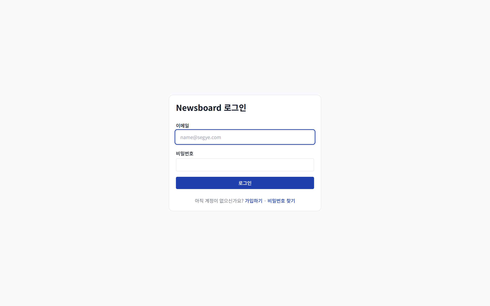
1 2 3- 1이메일 — 회사 이메일(name@segye.com) 입력
- 2비밀번호 입력
- 3로그인 버튼 → 대시보드로 이동 · 아래 가입하기 / 비밀번호 찾기 링크
회원가입 — 이메일 인증(6자리)
로그인 화면의 가입하기에서 진행합니다. 회사 이메일로 받은 6자리 인증번호로 본인 확인 후 계정을 만듭니다.
- 1이메일 입력 — @segye.com 주소만 가입할 수 있습니다
- 26자리 인증번호 입력 — 입력한 메일로 인증번호가 발송됩니다(10분 이내 유효). 메일이 안 오면 스팸함을 확인하세요
- 3이름 · 역할 · 비밀번호 설정 — 비밀번호는 8자 이상(대소문자·숫자·특수문자 포함)
비밀번호 찾기
로그인 화면의 비밀번호 찾기에서 진행합니다. 3단계입니다.
- 1이메일 입력 → 가입된 계정이면 6자리 인증번호 메일 발송(미가입 이메일은 안내 표시)
- 2인증번호 입력으로 본인 확인
- 3새 비밀번호 설정 → 변경되면 모든 기기에서 로그아웃되고 새 비밀번호로 다시 로그인합니다
화면 구성
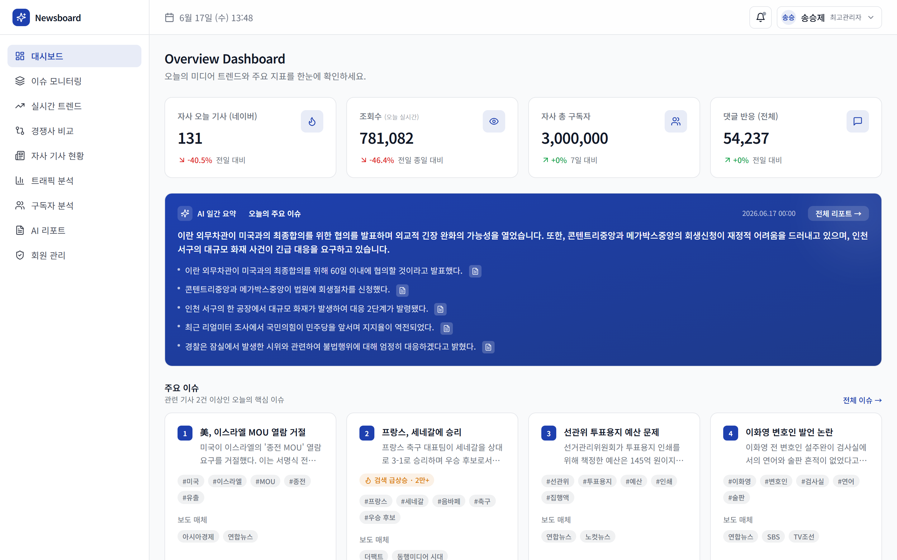
1 2 3- 1왼쪽 메뉴 — 대시보드 · 이슈 모니터링 · 실시간 트렌드 · 경쟁사 비교 · 자사 기사 현황 · 트래픽 분석 · 구독자 분석 · AI 리포트 (역할에 따라 표시)
- 2상단바 — 날짜 · 내 이름/역할
- 3프로필 / 로그아웃 (오른쪽 위)
역할별 접근 권한
계정 역할에 따라 사용할 수 있는 메뉴가 다릅니다. 권한이 없는 메뉴는 왼쪽 목록에 아예 표시되지 않습니다.
| 메뉴 | 최고관리자 | 관리자 | 기자 | 사업부 |
|---|---|---|---|---|
| 대시보드 | ● | ● | ● | ● |
| 이슈 모니터링 · 실시간 트렌드 · 경쟁사 비교 · 자사 기사 · AI 리포트 | ● | ● | ● | — |
| 트래픽 분석 · 구독자 분석 | ● | ● | — | ● |
| 기사 초안 작성(autowrite) | ● | — | ● | — |
| 회원 관리 | ● | — | — | — |
대시보드
로그인 후 처음 만나는 화면. 오늘의 핵심 지표와 주요 이슈를 한 화면에 종합합니다. 5분마다 갱신됩니다.
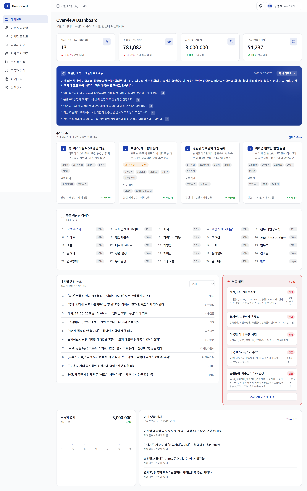
1 2 3 4- 1지표 카드 4개 — 자사 오늘 기사 수 · 조회수(PV) · 총 구독자 · 댓글 반응. 카드를 클릭하면 관련 페이지로 이동(권한 있는 메뉴만)
- 2AI 일간 브리핑 — 오늘 이슈를 AI가 요약 (매일 자동 생성)
- 3주요 이슈 카드 · 실시간 트렌드 키워드 · 인기 기사 랭킹 · 미보도 알림
- 4구독자 추이 차트 · 인기 댓글 기사
이슈 모니터링 — 이슈 클러스터 + 미보도 탐지
여러 매체 기사를 같은 사건끼리 묶은 이슈 클러스터를 보여주고, 경쟁사는 보도했지만 자사가 놓친 이슈(미보도)를 함께 표시합니다.
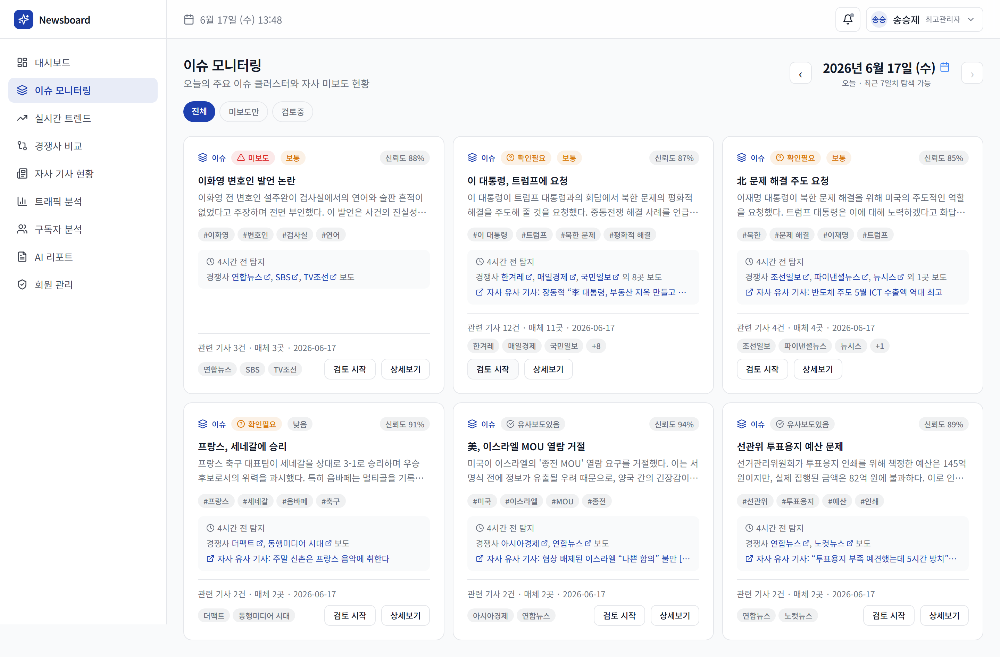
1 2 3 4- 1날짜 이동 — 화살표 또는 달력으로 다른 날짜 이슈 보기
- 2필터 탭 — 전체 / 미보도만 / 검토중
- 3커버리지 배지 — 미보도 확인필요 유사보도있음 보도함 · 우선순위(높음/보통/낮음) · 신뢰도
- 4검토 버튼(미보도 처리 상태 변경) · 상세보기로 이슈 내 기사 전체 보기
미보도 카드에는 탐지 시각, 먼저 보도한 경쟁사(클릭 시 원문), 그리고 자사 유사 기사(있으면)가 함께 표시되어, 정말 놓친 건지 빠르게 판단할 수 있습니다.
이슈 상세보기
카드의 상세보기를 누르면 이슈 하나를 깊이 들여다보는 화면이 열립니다. 한 사건에 어느 매체가 어떻게 보도했는지 전체 맥락을 파악할 수 있습니다.
이슈 클러스터 정보
제목 · 요약 · 키워드 · 신뢰도 · 관련 기사 수 · 보도 매체 수
AI 이슈 요약
이 이슈의 핵심을 AI가 정리(제목·요약·포인트). 없으면 ‘이 이슈 요약 생성’ 버튼으로 즉석 생성
관련 기사 목록
이슈에 묶인 전 매체 기사를 유사도 순으로. ★ 대표 기사 표시 · 매체·섹션·발행시각·유사도 % · 클릭 시 원문
실시간 트렌드 — 구글 급상승 검색어
구글에서 지금 급상승 중인 검색어를 3분마다 수집해, 자사 보도 여부와 함께 보여줍니다. “뜨는데 우리는 안 쓴” 키워드를 바로 찾아 대응할 수 있습니다.
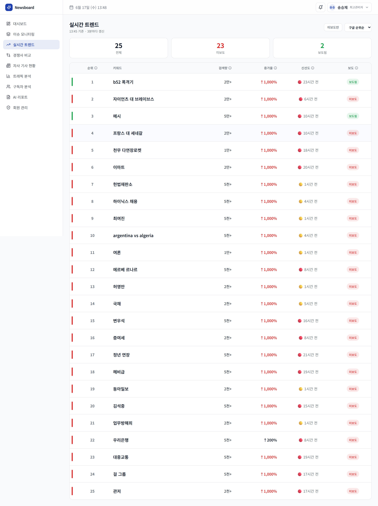
1 2 3 4- 1미보도만 필터 · 정렬(구글 순위 / 신선도 / 증가율 / 검색량)
- 2요약 카드 — 전체 / 미보도 / 보도됨 건수
- 3키워드 표 — 순위 · 검색량 · 증가율 · 신선도(🟢1시간 🟡6시간 🔴초과) · 보도 여부
- 4각 항목 옆 ⓘ 아이콘에 지표 설명. 행을 클릭하면 오른쪽 상세 패널이 열립니다
상세 패널 · 기사 초안 작성
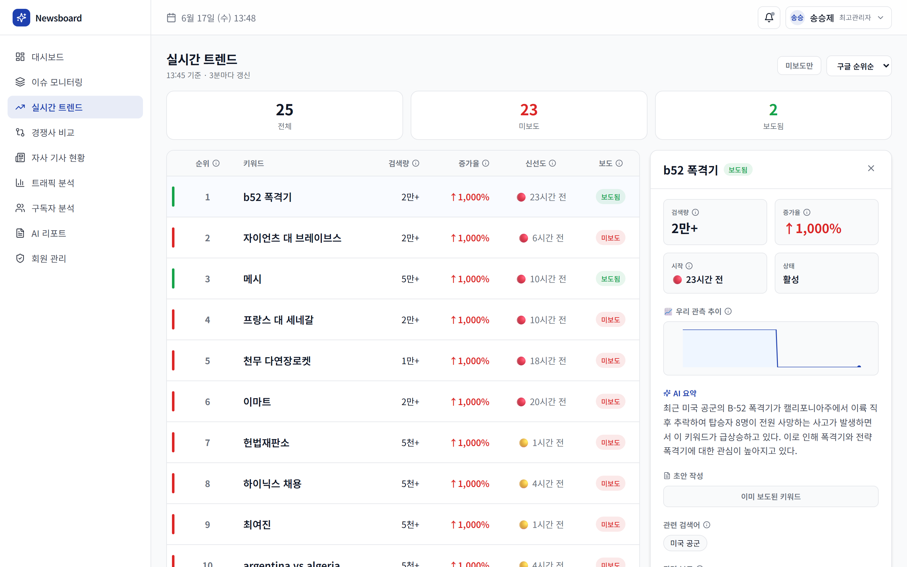
1 2 3 4- 1핵심 지표(검색량·증가율·시작 시각·상태) + 우리 관측 추이 그래프
- 2AI 요약 — 이 키워드가 왜 뜨는지 한 줄 정리
- 3초안 작성(기자·최고관리자 전용) — 관련 기사를 분석해 기사 초안 생성
- 4관련 검색어 · 관련 보도 · 자사 보도 여부 · 구글/네이버 바로가기
초안 상세 화면 · 기자 문체 학습
초안이 완성되면 상세 화면으로 이동합니다. 좌측에 기사 본문, 우측에 근거 팩트 패널(출처 매체별 요약·수치·인용·배경, 참고 이미지)이 나란히 배치돼, 작성된 문장과 그 근거를 바로 대조할 수 있습니다. 상단에는 ‘AI 생성 초안 · 사실관계 검증 필수 · 데스크 검수 후 발행’ 경고 배지가 항상 표시됩니다.
기자별 문체로 작성
각 기자가 과거에 쓴 기사를 주제·유형 섞어 18건(각 1,500자) AI가 미리 분석해 문체 프로파일(리드 방식·문장 길이·톤·구조·수치 처리·인용 배치·마무리 패턴·자주 쓰는 표현)을 학습해 둡니다. 본인 계정으로 작성하면 그 기자 문체를 반영하고, 작성 시 본인 기사 6건을 예시로 함께 보여줘 문체를 재현합니다.
학습 현황
현재 세계일보 기자 215명의 문체가 학습돼 있습니다. 학습 데이터가 없는 계정(예: 관리자 또는 신규 기자)은 문체 없이 팩트 기반으로만 초안을 작성합니다.
경쟁사 비교
선택한 매체들의 인기 랭킹 · 섹션별 랭킹 · 댓글 랭킹을 나란히 비교합니다. 자사(세계일보)는 파란 테두리로 강조됩니다.
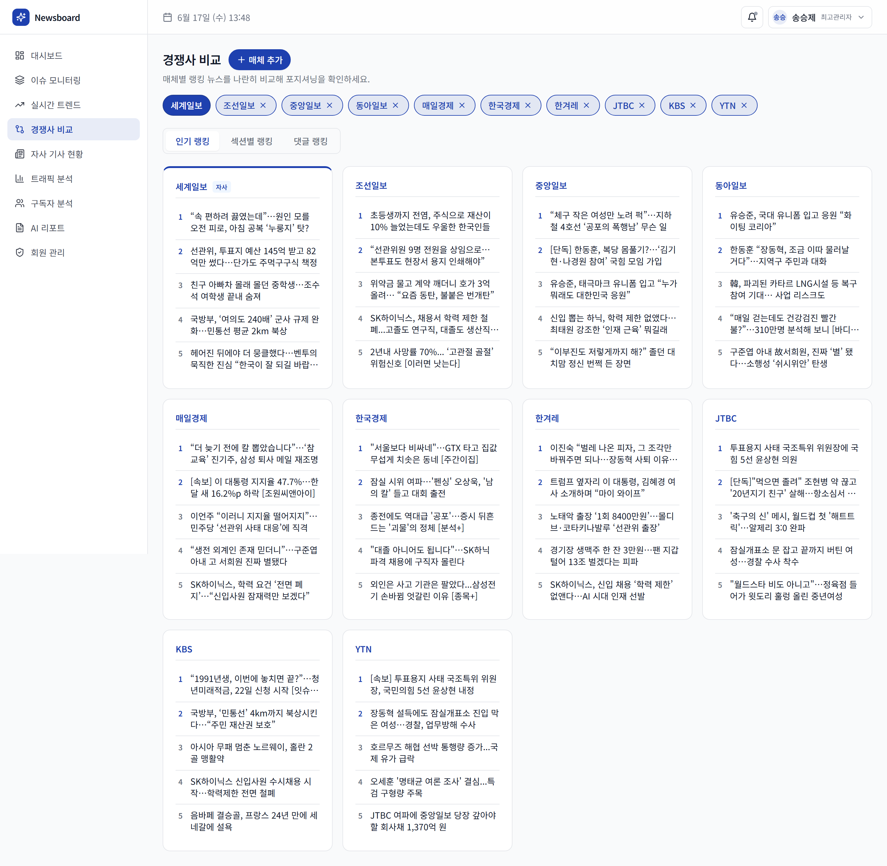
1 2 3- 1매체 선택 — 비교할 매체를 검색해 추가/제거(세계일보 고정). 선택은 브라우저에 기억됩니다
- 2랭킹 유형 탭 — 인기 랭킹 / 섹션별 랭킹 / 댓글 랭킹
- 3매체별 카드 — 각 매체 상위 기사 목록(클릭 시 원문). 섹션 탭은 정치·경제·사회 등 섹션 선택
인기 랭킹
네이버 매체별 인기 기사 비교
섹션별 랭킹
정치·경제·사회 등 섹션별 매체 TOP 3
댓글 랭킹
최근 24시간 댓글 많은 기사 TOP 5 · 참여도 배지(🔥매우 활발 / 💬활발 / 보통)
자사 기사 현황
세계일보가 네이버에 발행한 기사를 날짜별로 모아, 발행량 추이·섹션 분포·개별 기사 조회수를 한눈에 확인합니다.
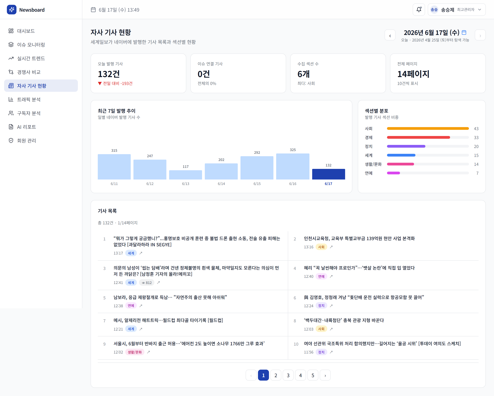
1 2 3 4- 1날짜 이동 — 화살표 또는 달력으로 날짜 선택(보유한 가장 오래된 발행일까지)
- 2요약 카드 — 오늘 발행 기사 수 · 이슈 연결 기사 · 수집 섹션 수 · 전체 페이지
- 3최근 7일 발행 추이 막대 차트 · 섹션별 분포
- 4기사 목록 — 제목 클릭 시 원문 · 발행시각 · 섹션 배지 · 👁 조회수(1만 이상 “X.X만” 축약) · 이슈 #번호 배지(소속 클러스터)
AI 리포트
AI가 자동 생성한 일간 브리핑 · 주간 리포트를 모아 봅니다. 오늘의 이슈 흐름과 핵심 포인트를 요약해 줍니다.
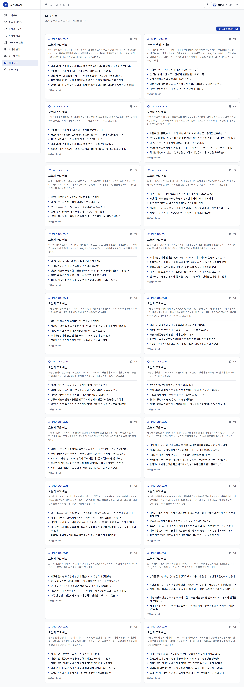
1 2- 1일간 리포트 생성 버튼 — 즉석에서 오늘 리포트를 만들 수 있습니다(자동 생성과 별개)
- 2리포트 카드 — 유형(DAILY/WEEKLY)·날짜 · 제목 · 요약 · 핵심 포인트 bullet · 사용 모델
트래픽 분석 — 조회수 · 유입 경로
네이버 파트너센터에서 수집한 자사 기사 조회수(PV)와 유입 경로를 분석합니다. (트래픽·구독자 메뉴는 사업부·관리자 전용)
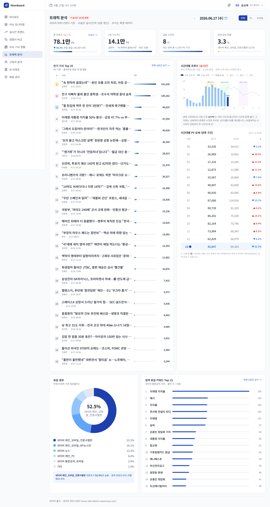
1 2 3 4- 1날짜 · 디바이스 선택(전체 / PC / 모바일). 오늘이면 실시간 ● HH:MM 배지 표시
- 2KPI 4개 — 총 조회수 · 1위 기사 PV · 피크(급증) 시간대 · 검색 유입 비중
- 3인기 기사 Top 25 + 시간대별 PV 차트(어제 동시간 비교)
- 4유입 경로 도넛 + 검색 유입 키워드 Top 15 (각 ‘더보기’로 전체·CSV)
구독자 분석
자사와 경쟁 매체의 네이버 구독자 수 흐름을 함께 비교합니다.
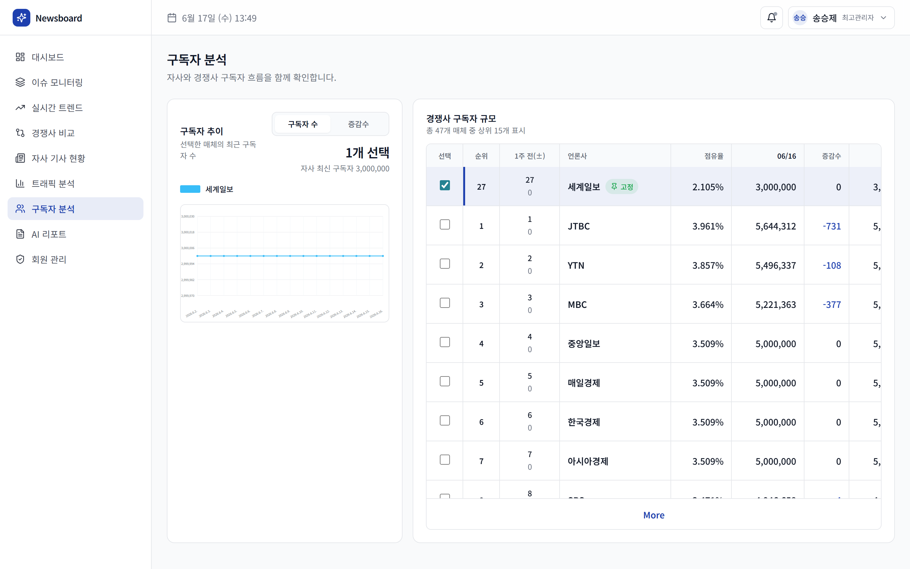
1 2- 1자사 총 구독자 + 7일 대비 증감
- 2경쟁사 구독자 비교 — 매체별 구독자 수·추이를 함께 탐색
회원 관리 — 최고관리자 전용
가입한 사용자를 관리합니다. 최고관리자만 접근할 수 있습니다.
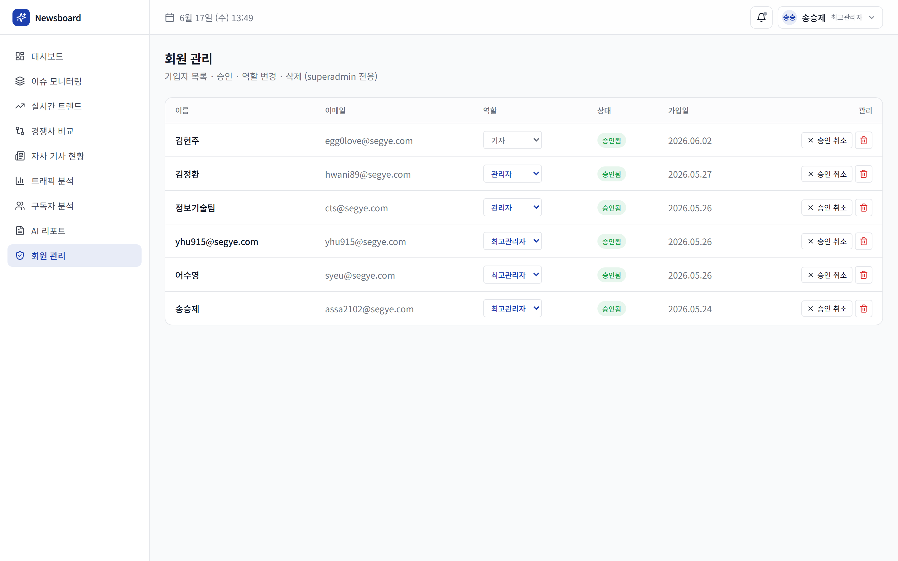
1 2 3- 1역할 변경 — 드롭다운으로 최고관리자/관리자/사업부/기자 전환
- 2상태 — 승인됨 / 대기 / 잠김 배지. 승인 · 승인 취소 버튼
- 3잠금 해제(로그인 5회 실패로 잠긴 계정) · 삭제(🗑, 되돌릴 수 없음)
자주 묻는 질문 · 팁
| 메뉴 | 수집 · 갱신 주기 |
|---|---|
| 대시보드 | 지표 종합 5분 캐시 (각 수집 주기에 맞춰 자동 갱신) |
| 이슈 모니터링 | 인기 랭킹 매시간 수집 → 클러스터링 → 미보도 탐지가 자동 연쇄 (화면 5분 캐시) |
| 실시간 트렌드 | 3분마다 (구글 급상승 검색어) |
| 경쟁사 비교 | 인기 랭킹 매시간 · 섹션별 랭킹 하루 4회 · 댓글 매시간 |
| 자사 기사 현황 | 기사 목록 10분마다 · 조회수(PV)는 전일 확정분이 매일 새벽 반영 |
| 트래픽 분석 | 오늘 실시간 10분 · 전일 확정 데이터 매일 새벽 05시 |
| 구독자 분석 | 매일 아침 08시 |
| AI 리포트 | 일간 브리핑 매일 자정 자동 생성 (수동 생성도 가능) |
향후 고도화 예정
현재 버전 이후 발전시켜 갈 방향입니다. 우선순위와 일정은 운영 상황에 따라 조정됩니다.
기자 문체 학습 심화
지금은 기자당 18건·각 1,500자를 분석합니다. AI 사용 한도를 키운 뒤 기자당 60건·본문 전체로 확대해, 더 풍부하게 문체를 반영하도록 고도화할 예정입니다.
예시 선별 정교화
문체 학습·작성에 쓰는 예시 기사를 기사 유형(스트레이트·해설·인터뷰)과 주제 기준으로 더 정교하게 골라, 상황에 맞는 문체를 반영합니다.
초안 품질 강화
분량 안정화, 제목 후보 2안 제시, 사실 체크리스트, 과거 자사 관련 기사 자동 링크 등 작성 보조 기능을 더합니다.
카카오톡 알림
미보도 급상승·가입 승인 등 주요 신호를 카카오톡으로 받아 더 빨리 대응할 수 있게 합니다.
트렌드 수집원 확장
지금의 구글 실시간 트렌드에 더해 다음(Daum) 트렌드까지 수집해 이슈를 더 폭넓게 조기 포착합니다.
트래픽 분석 강화
현재 트래픽 분석은 네이버 유입만 집계합니다. 여기에 구글·다음·자사 사이트 자체 수집까지 더해 유입 경로 분석을 한층 강화합니다.
수집 매체 확대
비교·모니터링 대상 경쟁 매체 수를 늘려 더 넓은 시장을 커버합니다.
Newsboard — 편집국 모니터링 도구
newsboard-two.vercel.app · 세계일보